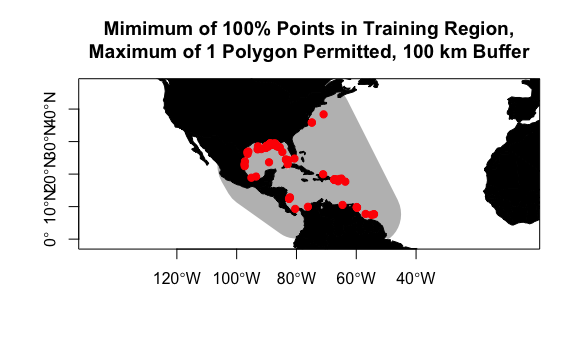
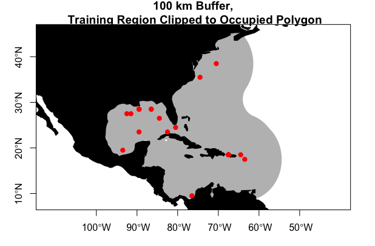
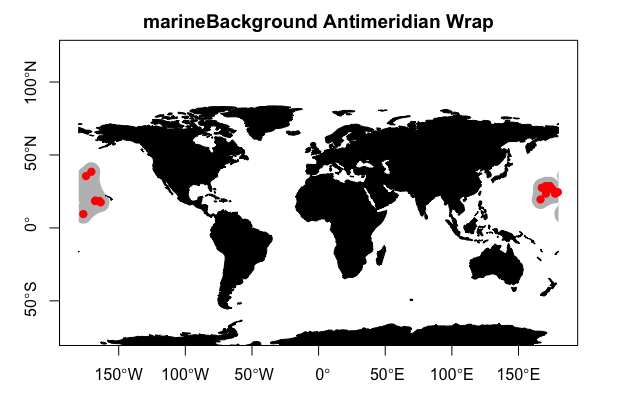

3. Environmental Data Sampling
Hannah L. Owens
Carsten Rahbek
2024-08-16
Source:vignettes/c_DataSampling.Rmd
c_DataSampling.RmdIntroduction
As stated in the introduction
to this package, one of the key contributions of
voluModel is the way it handles the extraction of
environmental data for niche modeling. Specifically, environmental data
at presences, absences, pseudoabsences, and/or background points can be
extracted from environmental data multi-layer SpatRaster
objects based on depth in addition to horizontal coordinates. Another
useful tool provided with voluModel is
marineBackground(), which helps the user generate training
regions from which background or pseudoabsence data are drawn. This is
where we will start, so let’s get into it.
Here are the packages you will need.
3D Data Extraction
First, we will cover how to extract environmental data from a
multi-layer SpatRaster object using 3D occurrence
coordinates. The species occurrences I will use are Steindachneria
argentea, Luminous Hake, data downloaded via R (R Core Team, 2020)
from GBIF (Chamberlain et al., 2021; Chamberlain and Boettiger,
2017) and OBIS (Provoost and Bosch, 2019) via occCite
(Owens et al., 2021).
# Get points
occs <- read.csv(system.file("extdata/Steindachneria_argentea.csv",
package='voluModel'))
occurrences <- occs %>%
dplyr::select(decimalLongitude, decimalLatitude, depth) %>%
dplyr::distinct() %>%
dplyr::filter(depth %in% 1:2000)
The environmental dataset I will use as an example is temperature (Locarnini et al., 2018) from the World Ocean Atlas (WOA; Garcia et al., 2019). I have chosen to focus on temperature for simple illustrative purposes–we recommend you explore additional variables from the World Ocean Atlas and other sources. These data are supplied by the World Ocean Atlas as point shapefiles; the version supplied here has been cropped between -110 and -40 longitude and between -5 and 50 latitude to make it more memory-efficient.
This chunk of code loads the example data shapefile, which results in
a SpatVector:
# Temperature
td <- tempdir()
unzip(system.file("extdata/woa18_decav_t00mn01_cropped.zip",
package = "voluModel"),
exdir = paste0(td, "/temperature"), junkpaths = T)
temperature <- vect(paste0(td, "/temperature/woa18_decav_t00mn01_cropped.shp"))
# Looking at the dataset
head(temperature)## SURFACE d5M d10M d15M d20M d25M d30M d35M d40M d45M d50M
## 1 23.514 23.266 22.969 22.373 21.832 21.320 20.839 20.309 19.780 19.264 18.715
## 2 23.542 23.222 22.915 22.430 21.938 21.343 20.747 20.182 19.584 18.984 18.394
## 3 23.575 23.392 22.919 22.318 21.766 21.117 20.531 19.860 19.266 18.673 18.161
## 4 23.204 22.979 22.559 22.057 21.401 20.651 19.978 19.433 18.835 18.247 17.691
## 5 23.451 23.125 22.726 22.134 21.520 20.828 20.128 19.472 18.875 18.353 17.875
## 6 23.261 22.968 22.559 22.052 21.528 20.945 20.337 19.759 19.198 18.669 18.162
## d55M d60M d65M d70M d75M d80M d85M d90M d95M d100M d125M
## 1 18.164 17.671 17.179 16.743 16.284 15.861 15.622 15.217 14.949 14.767 14.020
## 2 17.843 17.343 16.906 16.497 16.113 15.800 15.488 15.187 14.927 14.720 13.958
## 3 17.675 17.174 16.689 16.236 15.919 15.619 15.391 15.165 14.931 14.699 13.993
## 4 17.177 16.744 16.395 16.074 15.633 15.361 15.172 14.891 14.735 14.556 13.907
## 5 17.425 16.966 16.536 16.184 15.881 15.588 15.335 15.110 14.875 14.686 14.084
## 6 17.727 17.306 16.856 16.491 16.135 15.794 15.530 15.219 15.031 14.822 14.159
## d150M d175M d200M d225M d250M d275M d300M d325M d350M d375M d400M
## 1 13.552 13.277 13.096 12.912 12.678 12.306 11.736 11.055 10.482 9.987 9.504
## 2 13.598 13.302 13.106 12.928 12.667 12.272 11.675 11.060 10.469 9.908 9.476
## 3 13.574 13.328 13.123 12.928 12.693 12.278 11.729 11.155 10.538 9.984 9.504
## 4 13.528 13.305 13.117 12.926 12.655 12.275 11.745 11.064 10.454 9.927 9.559
## 5 13.720 13.465 13.216 13.032 12.682 12.247 11.732 11.089 10.423 9.892 9.668
## 6 13.757 13.515 13.299 13.123 12.759 12.287 11.760 11.087 10.540 10.019 9.684
## d425M d450M d475M d500M d550M d600M d650M d700M d750M d800M d850M d900M d950M
## 1 9.061 8.696 8.413 8.119 7.570 7.117 6.676 6.241 5.894 5.618 5.313 5.062 4.828
## 2 9.071 8.712 8.431 8.134 7.621 7.136 6.644 6.255 5.891 5.574 5.262 4.994 4.787
## 3 9.093 8.765 8.442 8.101 7.620 7.180 6.687 6.267 5.875 5.566 5.293 5.052 4.811
## 4 9.118 8.732 8.421 8.182 7.663 7.176 6.712 6.270 5.912 5.598 5.330 5.094 4.844
## 5 9.063 8.720 8.404 8.156 7.593 7.114 6.662 6.249 5.869 5.553 5.301 5.038 4.781
## 6 9.142 8.805 8.477 8.217 7.654 7.170 6.760 6.335 5.927 5.590 5.327 5.088 4.847
## d1000M d1050M d1100M d1150M d1200M d1250M d1300M d1350M d1400M d1450M d1500M
## 1 4.618 4.410 4.223 4.054 3.868 3.727 3.563 3.410 3.278 3.144 3.050
## 2 4.562 4.379 4.207 4.048 3.876 3.731 3.560 3.428 3.297 3.167 3.040
## 3 4.571 4.397 4.218 4.048 3.896 3.737 3.592 3.440 3.286 3.149 3.044
## 4 4.614 4.415 4.219 4.048 3.899 3.743 3.581 3.426 3.279 3.153 3.049
## 5 4.587 4.395 4.233 4.062 3.911 3.727 3.555 3.404 3.279 3.150 3.045
## 6 4.617 4.441 4.243 4.060 3.905 3.747 3.573 3.424 3.294 3.172 3.050
## d1550M d1600M d1650M d1700M d1750M d1800M d1850M d1900M d1950M d2000M d2100M
## 1 2.949 2.858 2.769 2.692 2.618 2.540 2.470 2.406 2.329 2.320 2.227
## 2 2.950 2.856 2.765 2.686 2.606 2.527 2.455 2.376 2.308 NaN NaN
## 3 2.946 2.860 2.759 2.682 2.605 2.531 2.456 2.392 2.326 2.351 2.193
## 4 2.938 2.843 2.754 2.675 2.602 2.528 2.463 2.398 2.335 2.223 2.130
## 5 2.936 2.845 2.760 2.666 2.579 2.513 2.453 2.395 2.340 2.254 2.165
## 6 2.946 2.845 2.758 2.679 2.600 2.526 2.459 2.397 2.338 2.276 2.165
## d2200M d2300M d2400M d2500M d2600M d2700M d2800M d2900M d3000M d3100M d3200M
## 1 2.147 2.075 2.012 1.960 1.908 1.864 1.826 1.794 1.770 NaN NaN
## 2 NaN NaN NaN NaN NaN NaN NaN NaN NaN NaN NaN
## 3 2.081 1.993 1.921 1.862 1.813 1.777 1.753 1.754 1.755 NaN NaN
## 4 2.046 1.962 1.891 1.834 1.789 1.795 1.745 NaN NaN NaN NaN
## 5 2.047 1.985 1.921 1.870 1.812 1.769 1.746 1.743 1.753 1.766 NaN
## 6 2.076 2.003 1.936 1.886 1.843 1.796 1.761 1.751 1.753 1.759 1.78
## d3300M d3400M d3500M d3600M d3700M d3800M d3900M d4000M d4100M d4200M d4300M
## 1 NaN NaN NaN NaN NaN NaN NaN NaN NaN NaN NaN
## 2 NaN NaN NaN NaN NaN NaN NaN NaN NaN NaN NaN
## 3 NaN NaN NaN NaN NaN NaN NaN NaN NaN NaN NaN
## 4 NaN NaN NaN NaN NaN NaN NaN NaN NaN NaN NaN
## 5 NaN NaN NaN NaN NaN NaN NaN NaN NaN NaN NaN
## 6 NaN NaN NaN NaN NaN NaN NaN NaN NaN NaN NaN
## d4400M d4500M d4600M d4700M d4800M d4900M d5000M d5100M d5200M d5300M d5400M
## 1 NaN NaN NaN NaN NaN NaN NaN NaN NaN NaN NaN
## 2 NaN NaN NaN NaN NaN NaN NaN NaN NaN NaN NaN
## 3 NaN NaN NaN NaN NaN NaN NaN NaN NaN NaN NaN
## 4 NaN NaN NaN NaN NaN NaN NaN NaN NaN NaN NaN
## 5 NaN NaN NaN NaN NaN NaN NaN NaN NaN NaN NaN
## 6 NaN NaN NaN NaN NaN NaN NaN NaN NaN NaN NaN
## d5500M
## 1 NaN
## 2 NaN
## 3 NaN
## 4 NaN
## 5 NaN
## 6 NaNAs you can see, each point in the SpatVector is a line
in the associated data.frame; each column is a depth layer
at that point–“d5M” translates to “5 meters deep”. For more details on
how to process environmental data, see the
raster data tutorial. This next chunk converts the
SpatVector to a multi-layer SpatRaster; the
layers of the multi-layer SpatRaster are then named the
same as the column names of the SpatVector. I strip the “d”
and “M” from the column names so they are a little easier to use as
depth coordinates. Note that R will not allow the raster
names to be numeric, so it adds an “X” to the beginning of each column
name. Don’t worry about this–voluModel can handle numbers
preceded by “X”s without user intervention.
# Creating a SpatRaster vector
template <- centerPointRasterTemplate(temperature)
tempTerVal <- rasterize(x = temperature, y = template, field = names(temperature))
# Get names of depths
envtNames <- gsub("[d,M]", "", names(temperature))
envtNames[[1]] <- "0"
names(tempTerVal) <- envtNames
temperature <- tempTerVal
# Here's a sampling of depth plots from the 102 depth layers available
plot(temperature[[c(1, 50)]])
rm(tempTerVal)At this point, you may have noticed a message popping up about which
columns voluModel is interpreting as coordinates.
voluModel is fairly flexible in how the coordinate columns
are named, and it relies on names instead of column position to
interpret x, y, and z (or latitude, longitude, and depth) coordinates.
We do this to make voluModel as flexible as possible to a
diversity of input formats, although English is the only supported
language at the moment. Here are some examples of names that work.
occsTest <- occurrences[19:24,]
xyzSample(occs = occsTest, envBrick = temperature)## Using decimalLongitude, decimalLatitude, and depth
## as x, y, and z coordinates, respectively.## [1] 25.770 15.091 NA 9.137 NA NA## Using x, y, and z
## as x, y, and z coordinates, respectively.## [1] 25.770 15.091 NA 9.137 NA NA
rm(occsTest)One optional step in a niche modeling workflow is to down-sample
occurrence data to the same resolution as the environmental data. We do
this to avoid over-fitting the model due to biased sampling. The next
chunk of code downsamples occurrence points so that there is only one
per voxel (i.e. 3D pixel) of environmental data. It does this by looping
through each layer of the multi-layer SpatRaster, selecting
the occurrence points with depths closest to the depths represented by
the corresponding layer in the SpatRaster vector. I then
downsample these points using voluModel’s
downsample() function.
# Gets the layer index for each occurrence by matching to depth
layerNames <- as.numeric(names(temperature))
occurrences$index <- unlist(lapply(occurrences$depth, FUN = function(x) which.min(abs(layerNames - x))))
indices <- unique(occurrences$index)
downsampledOccs <- data.frame()
for(i in indices){
tempPoints <- occurrences[occurrences$index==i,]
tempPoints <- downsample(tempPoints, temperature[[1]])
tempPoints$depth <- rep(layerNames[[i]], times = nrow(tempPoints))
downsampledOccs <- rbind(downsampledOccs, tempPoints)
}
occurrences <- downsampledOccs
head(occurrences)## decimalLongitude decimalLatitude depth
## 1 -54.5 7.5 450
## 2 -82.5 12.5 450
## 3 -93.5 19.5 450
## 4 -97.5 22.5 450
## 5 -82.5 23.5 450
## 6 -89.5 23.5 450
print(paste0("Original number of points: ", nrow(occs), "; number of downsampled occs: ", nrow(occurrences)))## [1] "Original number of points: 301; number of downsampled occs: 71"The resampled points returned by downsample() are
horizontally centered in each voxel. The red dots in the plot show
occurrences from the original dataset; the orange dots show the
downsampled dataset. Not all of the orange dots may be visible
underneath the red dots.
pointCompMap(occs1 = occs, occs2 = occurrences,
occs1Name = "original", occs2Name = "cleaned",
spName = "Steindachneria argentea",
land = land, verbose = FALSE)
At this point, we can demonstrate one of the key contributions of
voluModel– an improvement in how the environmental data are
extracted at species’ occurrences. voluModel samples
environmental conditions at the depth where each record was located,
instead of extrapolating to surface or bottom conditions. Finally, we
add a column called “response” and fill it by repeating “1”, to signify
that these occurrences should be interpreted as presences for the
purposes of modeling.
# Extraction
occurrences$temperature <- xyzSample(occs = occurrences, envBrick = temperature)## Using decimalLongitude, decimalLatitude, and depth
## as x, y, and z coordinates, respectively.
# Add "response" column for modeling
occurrences$response <- rep(1, times = nrow(occurrences))
occurrences <- occurrences[complete.cases(occurrences),]
head(occurrences)## decimalLongitude decimalLatitude depth temperature response
## 3 -93.5 19.5 450 9.137 1
## 5 -82.5 23.5 450 11.395 1
## 6 -89.5 23.5 450 9.285 1
## 7 -84.5 26.5 450 9.145 1
## 9 -91.5 27.5 450 9.091 1
## 15 -89.5 28.5 80 20.440 1In a “real” modeling scenario, you would extract all your
environmental variables using xyzSample(), then add the
response column. Or add the response column first or in the middle. I’m
not the boss of you.
Generating Repeatable Training Regions
To generate a sample of pseudoabsences and/or background points, it is important to consider the environments the species of interest can access (Barve et al., 2011). There is ample discussion in the literature on how to best delimit a niche model training region (also variously called M or the background region), and we will not review the issue here. In the absence of specific information on species’ dispersal capabilities, algorithmically generating a repeatable sampling background from a clear set of rules may be suitable approximation, or a jumping-off point for hand-curating training regions in a GIS software of choice.
We designed marineBackground() as a wrapper around , a
function provided by the rangeBuilder package
(Davis-Rabosky et al., 2016) which generates background
sampling regions by fitting an alpha hull polygon around an occurrence
point dataset. Let’s look at how marineBackground() (and by
extension getDynamicAlphaHull()) fits alpha hull polygons,
based on the cleaned species occurrence data from above.
getDynamicAlphaHull(), which is run within
marineBackground() generates a polygon (or polygons) that
can be used as a training region by fitting an alpha hull (or hulls)
around an occurrence dataset. Alpha is a parameter that controls the
complexity of the polygon(s) that is being fit around the occurrences.
getDynamicAlphaHull() adjusts the alpha parameter
iteratively, until it meets criteria the user can set via the arguments
fraction, which is the minimum fraction of occurrences that
must be contained within the polygon(s), partCount, which
is the maximum number of polygons generated to fit the data, and
buff, which is the permissible distance from a point to the
edge of a polyon in meters. marineBackground() takes these
and many of the same other arguments as
getDynamicAlphaHull(). Here’s how it works.
trainingRegion <- marineBackground(occurrences,
fraction = 1, partCount = 1, buff = 1000000,
clipToOcean = F)
plot(trainingRegion, border = F, col = "gray",
main = "100% Points, Max 1 Polygon Permitted, 100 km Buffer",
axes = T)
plot(land, col = "black", add = T)
points(occurrences[,c("decimalLongitude", "decimalLatitude")],
pch = 20, col = "red", cex = 1.5)
What parameters you choose to fit the alpha hull will depend on the
biology of the organism you are trying to model (e.g. you may choose a
much smaller buffer for a sessile organism than you would for a highly
vagile migratory species), your data, and the particulars of your study
system and the geography of your study area. You may need to experiment
to find something that looks sensible. If you do not provide a
pre-defined buffer, marineBackground() will calculate a
buffer that is the mean of the top and bottom 10% of distances between
points in the dataset.
You may have noticed that the training regions in the above examples
include some areas of the Pacific where the species has not been
observed, and cannot access. This could cause problems if it is used to
train your model. You could delete this area by hand in your
favorite GIS software, OR you could change clipToOcean to
TRUE in marineBackground(), and any polygon
fragments that do not contain an occurrence will be deleted
automatically. This is a key difference from
getDynamicAlphaHull().
trainingRegion <- marineBackground(occurrences,
buff = 1000000,
clipToOcean = T)
plot(trainingRegion, border = F, col = "gray",
main = "100 km Buffer, Clipped to Occupied Polygon",
axes = T)
plot(land, col = "black", add = T)
points(occurrences[,c("decimalLongitude", "decimalLatitude")],
pch = 20, col = "red", cex = 1.5)
The last major difference between marineBackground() and
getDynamicAlphaHull() is how the functions handle training
regions that are adjacent to the antimeridian (i.e. 180° E or W).
getDynamicAlphaHull() truncates polygons at this line,
which can lead to some strange-looking training areas or fatal errors.
marineBackground(), on the other hand, wraps polygons
across the meridian and merges them if they overlap. For this example, I
am going to manipulate the longitudinal coordinates of our Luminous Hake
dataset to generate a quick fictional example.
# Fictional example occurrences
pacificOccs <- occurrences
pacificOccs$decimalLongitude <- pacificOccs$decimalLongitude - 100
for (i in 1:length(pacificOccs$decimalLongitude)){
if (pacificOccs$decimalLongitude[[i]] < -180){
pacificOccs$decimalLongitude[[i]] <- pacificOccs$decimalLongitude[[i]] + 360
}
}
# marine Background
pacificTrainingRegion <- marineBackground(pacificOccs,
fraction = 0.95, partCount = 3,
clipToOcean = T)
plot(pacificTrainingRegion, border = F, col = "gray",
main = "marineBackground Antimeridian Wrap",
axes = T)
plot(land, col = "black", add = T)
points(pacificOccs[,c("decimalLongitude", "decimalLatitude")],
pch = 20, col = "red", cex = 1.5)
Background Data Extraction
As discussed above, some modeling methods require the generation of a
sampling region from which training/pseudoabsence/background points are
drawn. The training region should approximately answer the question
“What environments are most likely to have been experienced by Lumious
Hakes?” Our answer to this question for the purposes of this tutorial is
represented in trainingRegion, which we generated above
using marineBackground(). Next, we generate 3D training
points within this region using the mSampling3D() function.
The function takes an occurrence data.frame, a multi-layer
SpatRaster that will serve as a template for the resolution
of the training points, a SpatialPolygons object
representing the training region, and, optionally, information on the
range of depths from which the function should sample. If you have
reason to believe the species you are modeling can access depths higher
or lower than those represented by occurrences, you can specify a
maximum and minimum training depth from which to draw occurrence points.
mSampling3D() by default draws training points from the
full depth extent of the supplied multi-layer
SpatRaster.
For this example, I am sampling training points from 50 to 1500 m.
# Background
backgroundVals <- mSampling3D(occs = occurrences,
envBrick = temperature,
mShp = trainingRegion,
depthLimit = c(50, 1500))## Using decimalLongitude, decimalLatitude, and depth
## as x, y, and z coordinates, respectively.
backgroundVals$temperature <- xyzSample(occs = backgroundVals, temperature)## Using decimalLongitude, decimalLatitude, and depth
## as x, y, and z coordinates, respectively.
#Remove incomplete cases
backgroundVals <- backgroundVals[complete.cases(backgroundVals),]Once the points are sampled, we add a column called “response” and fill it by repeating “0”, to signify that these occurrences should be interpreted as absences for the purposes of modeling.
# Add "response" column for modeling
backgroundVals$response <- rep(0, times = nrow(backgroundVals))
head(backgroundVals)## decimalLongitude decimalLatitude depth temperature response
## 82 -68.5 43.5 50 6.473 0
## 83 -67.5 43.5 50 6.669 0
## 84 -66.5 43.5 50 6.779 0
## 86 -64.5 43.5 50 3.679 0
## 87 -63.5 43.5 50 4.003 0
## 88 -62.5 43.5 50 5.038 0It is important to note that this background data represents EVERY voxel within the training region that is not occupied by observances. Depending on your study design and the modeling algorithm you are using, these data will need to be subsampled. You could choose a random sample, select points based on geography, or any number of other strategies. Below is just one example–weighting the background points by their environmental dissimilarity to the Luminous Hake occurrence points. This manner of downsampling may be appropriate for modeling methods that interpret training points as pseudoabsences, such as generalized linear modeling, but will lead to overfit models when using algorithms like Maxent.
# Sample background points weighted by distance from mean of occurrence temperatures
meanTemp <- mean(occurrences[,c("temperature")])
backgroundVals$distance <- abs(backgroundVals[,"temperature"] - meanTemp)
backgroundVals$sampleWeight <- (backgroundVals$distance -
min(backgroundVals$distance))/(max(backgroundVals$distance) -
min(backgroundVals$distance))
sampleForAbsence <- sample(x = rownames(backgroundVals),
size = nrow(occurrences) * 100,
prob = backgroundVals$backgroundVals)
backgroundVals <- backgroundVals[match(sampleForAbsence,
rownames(backgroundVals)),]
backgroundVals$response <- as.factor(backgroundVals$response)
# Unite datasets and see how things look
dataForModeling <- rbind(occurrences, backgroundVals[,colnames(occurrences)])
ggplot(dataForModeling, aes(x = temperature, fill = response, color = response)) +
geom_density(alpha = .6) +
scale_color_manual(values=c("#999999", "#E69F00"),
labels = c("Pseudoabsence", "Presence")) +
scale_fill_manual(values=c("#999999", "#E69F00"),
labels = c("Pseudoabsence", "Presence")) +
labs(title="Temperature Sampling Density,\nOccurrences vs. Pseudoabsences",
x="Temperature (C)", y = "Density")+
theme_classic()
For a more complex, multivariate example of environmental dissimilarity weighting, refer to the GLM workflow.
Tidying up
Last, we need to close the temporary directory we opened when we opened the data.
unlink(td, recursive = T)References
Bakis Y (2021): TU_Fish. v1.1. No organization. Dataset/Occurrence. https://fishair.org/ipt/resource?r=tu_fish&v=1.1 Accessed via OBIS on 2020-11-04.
Bentley A (2022). KUBI Ichthyology Collection. Version 17.80. University of Kansas Biodiversity Institute. DOI: 10.15468/mgjasg. Accessed via GBIF on 2020-10-13.
Bentley A (2022). KUBI Ichthyology Tissue Collection. Version 18.68. University of Kansas Biodiversity Institute. DOI: 10.15468/jmsnwg. Accessed via GBIF on 2020-10-13.
Buckup P A (2022). Coleção Ictiológica (MNRJ), Museu Nacional (MN), Universidade Federal do Rio de Janeiro(UFRJ). Version 157.1487. Museu Nacional / UFRJ. DOI: 10.15468/lluzfl. Accessed via GBIF on 2020-10-13.
Catania D, Fong J (2022). CAS Ichthyology (ICH). Version 150.300. California Academy of Sciences. DOI: 10.15468/efh2ib. Accessed via GBIF on 2020-10-13.
Chakrabarty P (2019). LSUMZ (LSU MNS) Fishes Collection. Version 2.2. Louisiana State University Museum of Natural Science. DOI: 10.15468/gbnym3. Accessed via GBIF on 2020-10-13.
Chamberlain S, Barve V, Mcglinn D, Oldoni D, Desmet P, Geffert L, Ram K (2021). rgbif: Interface to the Global Biodiversity Information Facility API. R package version 3.6.0, https://CRAN.R-project.org/package=rgbif.
Chamberlain S, Boettiger C (2017). “R Python, and Ruby clients for GBIF species occurrence data.” PeerJ PrePrints. DOI: 10.7287/peerj.preprints.3304v1.
Davis-Rabosky AR, Cox CL, Rabosky DL, Title PO, Holmes IA, Feldman A, McGuire JA (2016). Coral snakes predict the evolution of mimicry across New World snakes. Nature Communications 7:11484. DOI: 10.1038/ncomms11484
Espinosa Pérez H, Comisión nacional para el conocimiento y uso de la biodiversidad C (2021). Computarización de la Colección Nacional de Peces del Instituto de Biología UNAM. Version 1.9. Comisión nacional para el conocimiento y uso de la biodiversidad. DOI: 10.15468/zb2odl. Accessed via GBIF on 2020-10-13.
Frable B (2019). SIO Marine Vertebrate Collection. Version 1.7. Scripps Institution of Oceanography. DOI: 10.15468/ad1ovc. Accessed via GBIF on 2020-10-13.
Fishnet2 Portal, http://www.fishnet2.net, Accessed via OBIS on 2020-11-04.
Froese, R. and D. Pauly. Editors. 2020. FishBase. World Wide Web electronic publication. www.fishbase.org, version (xx/200x). Accessed via OBIS on 2020-11-04.
Gall L (2021). Vertebrate Zoology Division - Ichthyology, Yale Peabody Museum. Yale University Peabody Museum. DOI: 10.15468/mgyhok. Accessed via GBIF on 2020-10-13.
García, CB, and Duarte, LO, ‘Columbian Caribbean Sea’, in J.H. Nicholls (comp.) HMAP Data Pages https://oceanspast.org/hmap_db.php Accessed via OBIS on 2020-11-04.
Garcia HE, Weathers K, Paver CR, Smolyar I, Boyer TP, Locarnini RA, Zweng MM, Mishonov AV, Baranova OK, Seidov D, Reagan JR (2018). World Ocean Atlas 2018, Volume 3: Dissolved Oxygen, Apparent Oxygen Utilization, and Oxygen Saturation. A Mishonov Technical Ed.; NOAA Atlas NESDIS 83, 38pp.
GBIF.org (24 September 2020) GBIF Occurrence Download DOI: 10.15468/dl.efuutj.
Grant S, McMahan C (2020). Field Museum of Natural History (Zoology) Fish Collection. Version 13.12. Field Museum. DOI: 10.15468/alz7wu. Accessed via GBIF on 2020-10-13.
Harvard University M, Morris P J (2022). Museum of Comparative Zoology, Harvard University. Version 162.296. Museum of Comparative Zoology, Harvard University. DOI: 10.15468/p5rupv. Accessed via GBIF on 2020-10-13.
Hendrickson D A, Cohen A E, Casarez M J (2022). University of Texas, Biodiversity Center, Ichthyology Collection (TNHCi). Version 5.175. University of Texas at Austin, Biodiversity Collections. DOI: 10.15468/h8gxdr. Accessed via GBIF on 2020-10-13.
INVEMAR (2022). SIBM en línea: Sistema de Información sobre Biodiversidad Marina. Santa Marta: Instituto de investigaciones Marinas y Costeras José Benito Vives de Andréis,. http://www.invemar.org.co/siam/sibm/index.htm Accessed via OBIS on 2020-11-04.
Locarnini RA, Mishonov AV, Baranova OK, Boyer TP, Zweng MM, Garcia HE, Reagan JR, Seidov D, Weathers K, Paver CR, Smolyar I (2018). World Ocean Atlas 2018, Volume 1: Temperature. A. Mishonov Technical Ed.; NOAA Atlas NESDIS 81, 52pp.
McLean, M.W. (2014). Straightforward Bibliography Management in R Using the RefManager Package. NA, NA. https://arxiv.org/abs/1403.2036.
McLean, M.W. (2017). RefManageR: Import and Manage BibTeX and BibLaTeX References in R. The Journal of Open Source Software.
Mertz W (2021). LACM Vertebrate Collection. Version 18.9. Natural History Museum of Los Angeles County. DOI: 10.15468/77rmwd. Accessed via GBIF on 2020-10-13.
Nakae M, Shinohara G (2018). Fish collection of National Museum of Nature and Science. National Museum of Nature and Science, Japan. Occurrence dataset DOI: 10.15468/w3dzv1 accessed via GBIF.org on yyyy-mm-dd. Accessed via OBIS on 2020-11-04.
Natural History Museum (2021). Natural History Museum (London) Collection Specimens. DOI: 10.5519/0002965. Accessed via GBIF on 2020-10-13.
National Museum of Natural History, Smithsonian Institution NMNH Fishes Collection Database (2007). National Museum of Natural History, Smithsonian Institution, 10th and Constitution Ave. N.W., Washington, DC 20560-0193. Accessed via OBIS on 2020-11-04.
Norén M, Shah M (2017). Fishbase. FishBase. DOI: 10.15468/wk3zk7. Accessed via GBIF on 2020-10-13.
Norton B, Hogue G (2021). NCSM Ichthyology Collection. Version 22.8. North Carolina State Museum of Natural Sciences. DOI: 10.36102/dwc.1. Accessed via GBIF on 2020-10-13.
Nychka D, Furrer R, Paige J, Sain S (2021). “fields: Tools for spatial data.” R package version 13.3. https://github.com/dnychka/fieldsRPackage.
Orrell T, Informatics Office (2021). NMNH Extant Specimen Records (USNM, US). Version 1.49. National Museum of Natural History, Smithsonian Institution. DOI: 10.15468/hnhrg3. Accessed via GBIF on 2020-10-13.
Owens H, Merow C, Maitner B, Kass J, Barve V, Guralnick R (2021). occCite: Querying and Managing Large Biodiversity Occurrence Datasets. doi: 10.5281/zenodo.4726676, R package version 0.4.9.9000, https://CRAN.R-project.org/package=occCite.
Prestridge H (2021). Biodiversity Research and Teaching Collections - TCWC Vertebrates. Version 9.4. Texas A&M University Biodiversity Research and Teaching Collections. DOI: 10.15468/szomia. Accessed via GBIF on 2020-10-13.
Provoost P, Bosch S (2019). “robis: R Client to access data from the OBIS API.” Ocean Biogeographic Information System. Intergovernmental Oceanographic Commission of UNESCO. R package version 2.1.8, https://cran.r-project.org/package=robis.
Pugh W (2021). UAIC Ichthyological Collection. Version 3.3. University of Alabama Biodiversity and Systematics. DOI: 10.15468/a2laag. Accessed via GBIF on 2020-10-13.
R Core Team (2017). R: A language and environment for statistical computing. R Foundation for Statistical Computing, Vienna, Austria. URL https://www.R-project.org/.
Robins R (2021). UF FLMNH Ichthyology. Version 117.342. Florida Museum of Natural History. DOI: 10.15468/8mjsel. Accessed via GBIF on 2020-10-13.
Tavera L, Tavera M. L (2021). Biodiversidad de los recursos marinos y costeros entre Cartagena y el Golfo de Urabá, Caribe colombiano. Version 2.4. Instituto de Investigaciones Marinas y Costeras - Invemar. DOI: 10.15472/d2jusp. Accessed via GBIF on 2020-10-13.
UNIBIO, IBUNAM (2020). CNPE/Coleccion Nacional de Peces. DOI: 10.15468/o5d48z. Accessed via GBIF on 2020-10-13.
Wagner M (2017). MMNS Ichthyology Collection. Mississippi Museum of Natural Science. DOI: 10.15468/4c3qeq. Accessed via GBIF on 2020-10-13.
Werneke D (2019). AUM Fish Collection. Version 8.1. Auburn University Museum. DOI: 10.15468/dm3oyz. Accessed via GBIF on 2020-10-13.